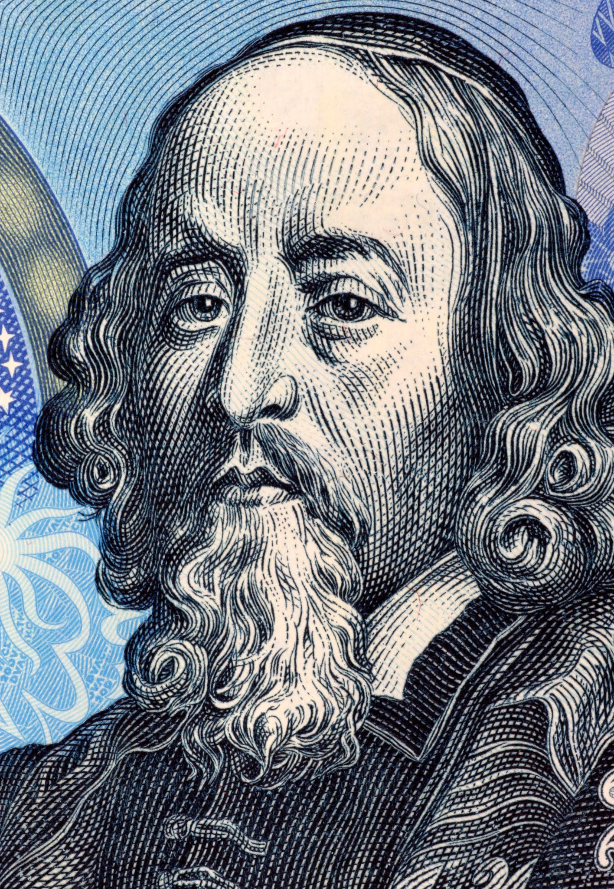

Jan Ámos Komenský se narodil 28. 3. 1592 v Nivnici. Jeho otec, Martin Komenský, byl členen církve. Narodil se do rodiny pěti dětí. V dvanácti mu umřeli rodiče, starala se o něj Zuzana Nohálová ze Strážnice. Navštěvoval Strážnickou Bratrskou školu. Když v roce 1605 vypálili vojáci Šťepána Bočkaje Strážnici, ztratil domov i část jeho dědictví v Uherském Brodě.
Ve Vyšším oddělení vbratrské školy v Přerově získal znalost latiny a pod vedením Tomáše Dubina Získal vědomosti otevírající mu univerzitní vzdělání. V roce 1611 byl díky přízni biskupa Jana Lánského. poslán na německé reformantské školy v Herbornu, poté i do Heidelberku. Studium ukončil teologickou disputací.
Stal se představeným Strážnické bratrské školy. Uvědomoval si špatný stav soudobého školství a snažil se ho zlepšit, za což ode mě má velký respekt. Ve volném čase sám sbíral materiál pro první českou encyklopedii - Divadlo Veškerenstva. Krátce po návratu na Moravu byl také ordinován na kněze (1616).
Pobělohorské působeníNa Komenského třicetiletá válka a porážka stavovského povstání zapůsobila celkem špatně, stejně jako na víceméně všechny. Vzhledem k tomu, že byl sám protestant, je asi jasné, na jaké straně asi bude. V době Bíle hory byl ve Funelku. Pak ale musel odejít a od roku 1621 se skrýval v Oderských vrších. Slyšel o spálení knihovny ve Funelku. Po nějaké době skrývání našel útočiště v Brandýsu nad Orlicí, odkud začal plánovat odchod do exilu.
Po dobu svého života měl Komenský 4 manželky - Janu Gajusovou, Marii Dorotu Cyrilovou a Magdalénu Vizovskou. Měl také 4 děti - Daniela Komenského, Alžbětu Komenskou, Korotu Kristinu Komenskou a Zuzanu Komenskou.